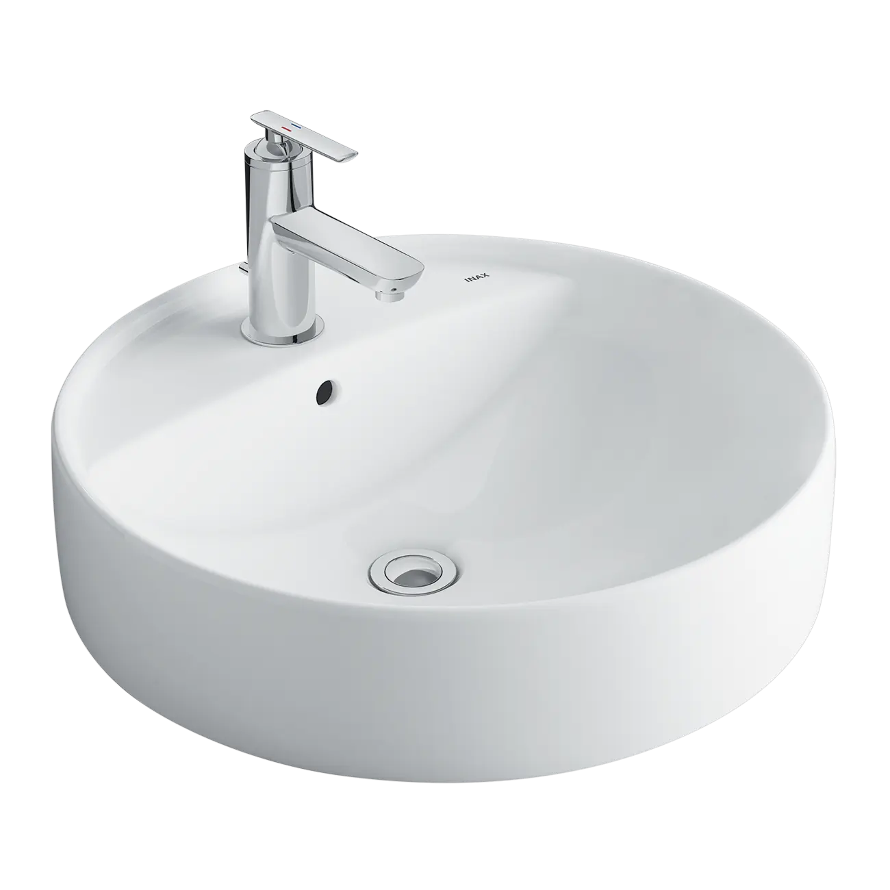
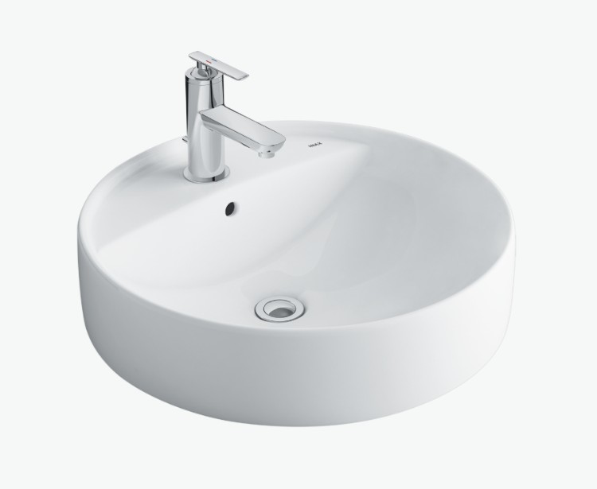
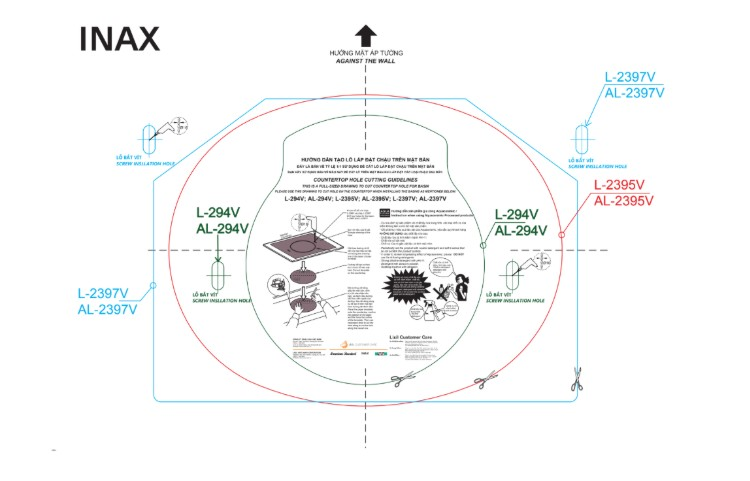

Chậu rửa đặt bàn L-294V(EC/FC) là mẫu chậu rửa mặt đặt bàn đá đẹp mang phong cách tròn hiện đại, lý tưởng để tạo điểm nhấn sang trọng và tinh tế cho không gian phòng tắm. Sản phẩm nổi bật với thiết kế linh hoạt (EC/FC) và chất liệu sứ cao cấp chuẩn Nhật, đảm bảo độ bền vững và khả năng vệ sinh dễ dàng.Thiết kế chậu rửa đặt bàn L-294V(EC/FC) tròn, hiện đại, linh hoạtKiểu dáng đặt bàn sang trọng: Thiết kế dạng đặt nổi, dáng tròn cổ điển nhưng vẫn rất hiện đại, tạo nên vẻ ngoài thanh lịch và cao cấp cho khu vực lavabo.Đế vòi tiện lợi: Chậu có đế vòi tiện lợi tích hợp trên thân chậu, giúp việc lắp đặt vòi trở nên gọn gàng và ổn định hơn.Linh hoạt về lỗ vòi (EC/FC):EC (Chậu 3 lỗ): Phù hợp để gắn các loại vòi 1 tay gạt có đế rộng hoặc các loại vòi 3 lỗ truyền thống.FC (Chậu 1 lỗ): Phù hợp với các loại vòi 1 tay gạt thân thấp thông thường.Kích thước cân đối: Với kích thước 472 x 170 x 472 (mm), chậu L-294V phù hợp với nhiều kích cỡ mặt bàn khác nhau.Lỗ xả tràn tiện lợi: Chậu được thiết kế kèm lỗ xả tràn, giúp ngăn chặn nước tràn ra ngoài.Các tính năng nổi bật của L-294V(EC/FC)Chất liệu sứ cao cấp chuẩn Nhật BảnChậu được chế tạo từ Sứ cao cấp chuẩn Nhật, đảm bảo độ bền vượt trội. Men sứ sáng đẹp, trơn bóng, giúp dễ dàng vệ sinh và duy trì vẻ ngoài tinh tươm lâu dài.Dễ dàng kết hợp với nhiều sản phẩm vòi lavaboChậu L-294V có thể kết hợp với nhiều dòng vòi lavabo INAX, bao gồm các mẫu thân thấp (1 lỗ) và thân cao đặt trên chậu, như LFV-12102S-1, LFV-222S, LFV-202S, LFV-212S, LFV-1402S, LFV-2012S.Video giới thiệu chậu rửa INAXHướng dẫn sử dụng và lắp đặt chậu rửa đặt bàn L-294V(EC/FC)Xem hướng dẫn lắp đặt: HDLD L-294V AL-294V L-2395V AL-2395V L-2397V AL-2397V.pdfThông số kỹ thuậtChất liệuSứ cao cấpKiểu dángĐặt bàn sang trọngKích thước472 x 170 x 472 (mm)Thiết kếDáng tròn hiện đại với đế vòi tiện lợiThương hiệuINAXTính năng- Sứ cao cấp chuẩn Nhật, trắng sạch, trơn bóng, dễ dàng vệ sinh - Lỗ xả tràn tiện lợi - EC: Chậu 3 lỗ gắn vòi 1 tay gạt - FC: Chậu 1 lỗMàu sắcTrắngKhác- Dễ dàng kết hợp với vòi lavabo thân cao: LFV-112SH, LFV-2012SH, LFV-502SH và LFV-5012SH - Hotline tư vấn và bảo hành: 18006633
Chậu rửa đặt bàn L-294V(EC/FC)
Chậu rửa thương hiệu INAX.
Đã cập nhật danh sách yêu thích.
DANH MỤC: Chậu rửa
MÃ SẢN PHẨM: L-294V(EC/FC)
DEPTH: 472mm
HEIGHT: 170mm
WIDTH: 472mm
Chậu rửa đặt bàn L-294V(EC/FC) là mẫu chậu rửa mặt đặt bàn đá đẹp mang phong cách tròn hiện đại, lý tưởng để tạo điểm nhấn sang trọng và tinh tế cho không gian phòng tắm. Sản phẩm nổi bật với thiết kế linh hoạt (EC/FC) và chất liệu sứ cao cấp chuẩn Nhật, đảm bảo độ bền vững và khả năng vệ sinh dễ dàng.Thiết kế chậu rửa đặt bàn L-294V(EC/FC) tròn, hiện đại, linh hoạtKiểu dáng đặt bàn sang trọng: Thiết kế dạng đặt nổi, dáng tròn cổ điển nhưng vẫn rất hiện đại, tạo nên vẻ ngoài thanh lịch và cao cấp cho khu vực lavabo.Đế vòi tiện lợi: Chậu có đế vòi tiện lợi tích hợp trên thân chậu, giúp việc lắp đặt vòi trở nên gọn gàng và ổn định hơn.Linh hoạt về lỗ vòi (EC/FC):EC (Chậu 3 lỗ): Phù hợp để gắn các loại vòi 1 tay gạt có đế rộng hoặc các loại vòi 3 lỗ truyền thống.FC (Chậu 1 lỗ): Phù hợp với các loại vòi 1 tay gạt thân thấp thông thường.Kích thước cân đối: Với kích thước 472 x 170 x 472 (mm), chậu L-294V phù hợp với nhiều kích cỡ mặt bàn khác nhau.Lỗ xả tràn tiện lợi: Chậu được thiết kế kèm lỗ xả tràn, giúp ngăn chặn nước tràn ra ngoài.Các tính năng nổi bật của L-294V(EC/FC)Chất liệu sứ cao cấp chuẩn Nhật BảnChậu được chế tạo từ Sứ cao cấp chuẩn Nhật, đảm bảo độ bền vượt trội. Men sứ sáng đẹp, trơn bóng, giúp dễ dàng vệ sinh và duy trì vẻ ngoài tinh tươm lâu dài.Dễ dàng kết hợp với nhiều sản phẩm vòi lavaboChậu L-294V có thể kết hợp với nhiều dòng vòi lavabo INAX, bao gồm các mẫu thân thấp (1 lỗ) và thân cao đặt trên chậu, như LFV-12102S-1, LFV-222S, LFV-202S, LFV-212S, LFV-1402S, LFV-2012S.Video giới thiệu chậu rửa INAXHướng dẫn sử dụng và lắp đặt chậu rửa đặt bàn L-294V(EC/FC)Xem hướng dẫn lắp đặt: HDLD L-294V AL-294V L-2395V AL-2395V L-2397V AL-2397V.pdfThông số kỹ thuậtChất liệuSứ cao cấpKiểu dángĐặt bàn sang trọngKích thước472 x 170 x 472 (mm)Thiết kếDáng tròn hiện đại với đế vòi tiện lợiThương hiệuINAXTính năng- Sứ cao cấp chuẩn Nhật, trắng sạch, trơn bóng, dễ dàng vệ sinh - Lỗ xả tràn tiện lợi - EC: Chậu 3 lỗ gắn vòi 1 tay gạt - FC: Chậu 1 lỗMàu sắcTrắngKhác- Dễ dàng kết hợp với vòi lavabo thân cao: LFV-112SH, LFV-2012SH, LFV-502SH và LFV-5012SH - Hotline tư vấn và bảo hành: 18006633
DANH MỤC: Chậu rửa
MÃ SẢN PHẨM: L-294V(EC/FC)
DEPTH: 472mm
HEIGHT: 170mm
WIDTH: 472mm